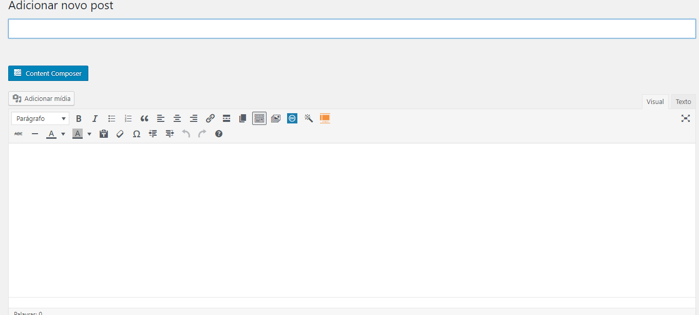
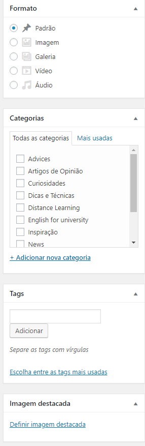
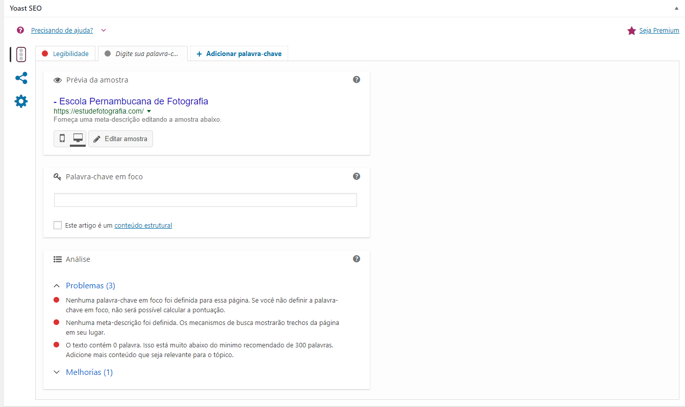
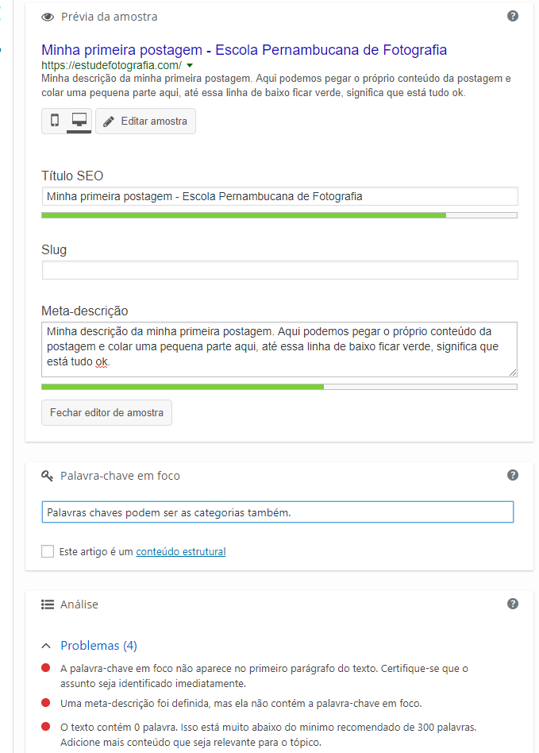
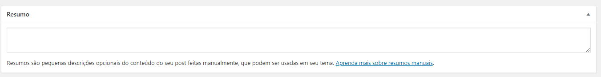
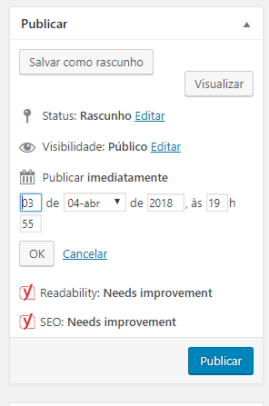

Postagem no blog
Postagem no blog
Para fazer uma postagem ou editar é muito simples, logado no nosso painel de controle, passe o mouse em cima de Posts e clique em Adicionar novo ou para editar, Todos os posts.

Na criação do post precisamos de um título e de seu conteúdo.

O formato do post é Padrão, a categoria deve ser selecionada de acordo com o conteúdo da postagem, se a mesma não existir, é possível criar uma nova.

As tags podem ser iguais as categorias. Vale lembrar também a necessidade de escolher a imagem destacada, que será a imagem que irá aparecer como capa da postagem.
Após criar o corpo do seu post, precisamos analisar um plugin, o Yoast Seo. O mesmo serve ajudar o site na classificação do Google, vamos ver como ele funciona:

Teremos nossa prévia que irá mostrar como o conteúdo será exibido no Google. Ao passar o mouse por cima da prévia, podemos editar o titulo e a meta-descrição, ambos precisam ser de acordo com o conteúdo da postagem.

Com isso, editamos nosso título, a descrição e as palavras-chave. Observe que existe uma aba chamada Problemas, lá podemos se basear no que falta para a nossa postagem ganhar uma boa nota de avaliação no Google. Precisamos apenar seguir os passos que o Yoast nos dá.
Descendo a página, teremos o Resumo, local que serve para exibir o conteúdo resumido na página principal do site. Nele, podemos pegar uma parte da nossa postagem e colar lá.

Após isso, podemos publicar nossa postagem imediatamente ou agendar por data, como mostra a imagem abaixo:

Created with the Personal Edition of HelpNDoc: Produce online help for Qt applications